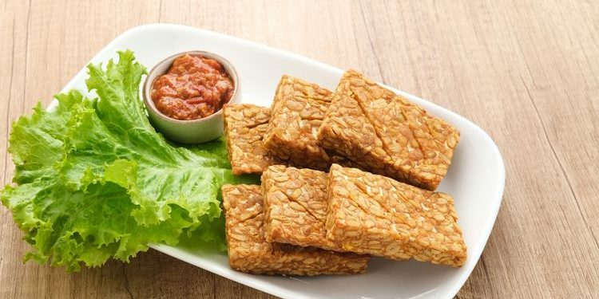
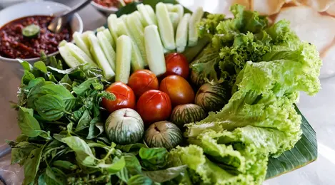
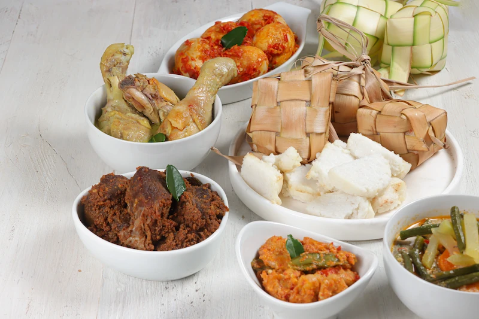

Kuliner
Prospek Bisnis Warteg Bahari Dalam Jangka Panjang
Berikut adalah beberapa strategi yang dapat dilakukan untuk menarik lebih banyak pelanggan dan memperluas bisnis warteg bahari.
![bisnis warteg bahari]()
Warteg bahari adalah salah satu jenis warung makan yang menyajikan masakan khas Indonesia dengan cita rasa yang autentik. Warung ini biasanya ditemukan di daerah pesisir atau dekat dengan pantai, sehingga banyak menyajikan hidangan laut yang segar. Dengan semakin banyaknya minat masyarakat terhadap kuliner lokal, prospek bisnis warteg bahari dalam jangka panjang sangat menjanjikan.
Menjaga Kualitas Masakan
Salah satu hal yang paling penting dalam bisnis warteg bahari adalah menjaga kualitas masakan. Karena warteg bahari menyajikan masakan khas Indonesia, maka cita rasa yang autentik harus tetap dijaga. Pastikan bahan-bahan yang digunakan segar dan berkualitas, serta proses memasak yang higienis. Pelanggan akan kembali ke warteg bahari jika mereka merasa puas dengan rasa dan kualitas masakan yang disajikan.
Menawarkan Harga yang Terjangkau
Salah satu daya tarik utama warteg bahari adalah harga yang terjangkau. Dengan harga yang lebih murah dibandingkan restoran atau warung makan lainnya, warteg bahari menarik pelanggan dari berbagai kalangan. Namun, tetap perhatikan kualitas masakan dan jangan mengorbankan bahan-bahan yang digunakan hanya untuk menekan biaya produksi. Pelanggan akan lebih memilih warteg bahari yang menawarkan harga yang wajar dan masakan yang lezat.
Membuat Menu yang Beragam
Untuk menarik lebih banyak pelanggan, warteg bahari dapat membuat menu yang beragam. Selain hidangan laut, warteg bahari juga dapat menyajikan masakan khas daerah lainnya, seperti masakan Padang atau Jawa. Dengan menu yang beragam, pelanggan dapat memilih sesuai dengan selera mereka dan tidak bosan dengan pilihan yang terbatas. Selain itu, warteg bahari juga dapat menawarkan menu spesial pada hari-hari tertentu, seperti menu ikan bakar pada hari Jumat.
Baca juga:
Analisis Kesuksesan Franchise Warteg Putri Bahari: Strategi, Tantangan, dan Prospek
Mengungkap Peluang Bisnis: Memahami Waralaba Murah
Membuat Suasana yang Nyaman
Selain masakan yang lezat, suasana yang nyaman juga merupakan faktor penting dalam menarik pelanggan. Warteg bahari dapat membuat suasana yang santai dan hangat, dengan dekorasi yang sederhana namun menarik. Musik tradisional atau gamelan dapat menambah nuansa khas Indonesia. Selain itu, pastikan juga kebersihan dan kenyamanan tempat duduk bagi pelanggan.
Berpromosi di Media Sosial
Media sosial adalah alat pemasaran yang sangat efektif untuk bisnis warteg bahari. Buat akun di platform seperti Instagram dan Facebook, dan gunakan foto-foto masakan yang menarik untuk menarik perhatian pelanggan potensial. Selain itu, gunakan juga hashtag yang relevan seperti #localfood atau #authenticcuisine untuk menjangkau lebih banyak orang. Jangan lupa untuk membalas komentar dan pesan dari pelanggan, dan gunakan kesempatan ini untuk mempromosikan menu spesial atau diskon yang sedang berlangsung.
Menjaga Konsistensi
Untuk mempertahankan pelanggan yang sudah ada dan menarik pelanggan baru, warteg bahari harus menjaga konsistensi dalam kualitas masakan, harga, dan pelayanan. Pelanggan akan kembali jika mereka merasa puas dengan pengalaman mereka sebelumnya. Jangan ragu untuk meminta umpan balik dari pelanggan dan terus berinovasi untuk meningkatkan kualitas bisnis.
Dengan strategi yang tepat, bisnis warteg bahari dapat berkembang dan bertahan dalam jangka panjang. Tetap menjaga kualitas masakan dan pelayanan yang baik, serta berinovasi dalam menu dan promosi, akan membantu menarik lebih banyak pelanggan dan memperluas bisnis warteg bahari Anda.
Apakah Anda memiliki pengalaman dalam bisnis warteg bahari? Bagikan di komentar di bawah ini!


Pada Artikel ini Anda akan menjelajahi berbagai olahan tempe unik yang menggugah selera, mengungkap kekayaan warisan kuliner Indonesia.
Tempe, salah satu makanan khas Indonesia, telah menjadi bagian tak terpisahkan dari budaya kuliner di berbagai belahan dunia. Terbuat dari kedelai yang fermentasi, tempe bukan hanya kita kenal karena kandungan gizinya yang kaya, tetapi juga fleksibilitasnya dalam pengolahan. Dari makanan ringan hingga hidangan utama, tempe hadir dalam beragam bentuk dan rasa yang menggoda.
Tempe Goreng Sambal Matah
Tempe goreng adalah salah satu camilan yang paling populer di Indonesia. Namun, tambahan sambal matah memberikan sentuhan khas Bali pada hidangan ini. Sambal matah adalah campuran bawang merah, cabai rawit, dan bahan-bahan lain yang dengan penyajian segar tanpa melalui proses memasak. Kombinasi pedas dan segar dari sambal matah menciptakan harmoni yang sempurna dengan kelezatan gurih tempe goreng.
Tempe Mendoan
Tempe mendoan berasal dari Jawa Tengah dan Jawa Barat, Indonesia. Mendoan adalah istilah lokal untuk menggoreng dengan sedikit minyak hingga matang dengan rasa yang tetap lembut di dalam. Hidangan ini biasanya penyajian dengan irisan tipis daun bawang dan bawang goreng sebagai pelengkap, serta sambal khas yang memberikan sensasi pedas yang membangkitkan selera.
Tempe Bacem
Tempe bacem adalah hidangan Jawa yang terkenal dengan rasa manisnya yang unik. Merendam Potongan tempe dalam campuran gula merah, kecap manis, dan rempah-rempah sebelum melakukan penggorenga hingga matang. Proses perendaman dalam bumbu-bumbu ini memberikan tempe tekstur yang lembut dan rasa yang begitu meresap. Penyajian Tempe bacem biasanya sebagai lauk pendamping nasi putih atau sebagai camilan.
Tempe Kering
Makanan ini adalah salah satu olahan tempe yang tahan lama dan dapat kita simpan dalam jangka waktu yang cukup lama. Tempe kita potong menjadi irisan tipis dan kemudian keringkan dengan cara menggorengnya hingga kering dan renyah. Biasanya penyajianya sebagai camilan ringan, tempe kering memiliki cita rasa gurih yang konsentrat dan tekstur yang memikat.
Baca juga:
5 Tips Cara Membuat Chicken Katsu Crispy yang Lezat
10 Alasan Mengapa Anda Harus Membuka Usaha Kuliner
8 Franchise Toko Roti yang Paling Menguntungkan di Indonesia
Orek Tempe
Orek tempe adalah hidangan yang sangat populer di Indonesia. Tempe kita potong kecil-kecil dan kemudian memasaknyadengan bumbu-bumbu seperti bawang putih, bawang merah, cabai, dan kecap manis. Proses pengolahan ini menghasilkan hidangan yang kaya akan rasa gurih dan manis dengan sentuhan pedas yang menyegarkan.
Tempe Penyet
Tempe penyet adalah hidangan khas Jawa yang terkenal dengan cita rasa pedasnya. Potongan tempe kita goreng hingga kecokelatan dan kemudian mengulek atau “peset” dengan sambal pedas menggunakan cobek dan ulekan. Hidangan ini biasanya penyajian dengan lalapan seperti mentimun, tomat, dan kubis serta nasi putih hangat.
Tempe Balado
Menu ini adalah hidangan yang berasal dari Sumatra Barat yang terkenal dengan kepedasannya. Menggoreng Tempe hingga kecokelatan dan kemudian penyasajian dengan saus balado, yang terbuat dari cabai, bawang merah, bawang putih, dan tomat yang kita ulek hingga halus dan memasak dengan minyak hingga matang. Hidangan ini biasanya penyajiannya dengan nasi hangat dan acar.
Tempe Tahu Crispy
Tempe tahu crispy adalah hidangan yang menggabungkan tempe dan tahu dalam satu hidangan yang renyah dan gurih. Potongan tempe dan tahu kita goreng hingga kecokelatan dan sajikan dengan saus sambal atau saus kacang sebagai pelengkap. Hidangan ini cocok sebagai camilan atau pendamping nasi putih.
Tempe Gulung
Tempe gulung adalah hidangan kreatif yang menggabungkan tempe dengan sayuran segar dan bumbu-bumbu lainnya. Olesi Lembaran tempe dengan adonan yang terbuat dari tepung terigu dan bumbu-bumbu lainnya, kemudian digulung dengan wortel, mentimun, daun selada, dan saus sambal atau saus kacang. Hidangan ini dapat disajikan sebagai makanan ringan atau hidangan utama.
Tempe Burger
Tempe burger adalah alternatif sehat dan lezat untuk burger daging konvensional. Patty tempe yang bumbui dengan rempah-rempah dan bumbu-bumbu lainnya goreng hingga kecokelatan dan kemudian sajikan di antara roti burger dengan tambahan sayuran segar seperti selada, tomat, dan bawang bombay. Menu ini dapat anda nikmati sebagai hidangan vegetarian yang bergizi.
Tempe Crispy Honey
Tempe crispy honey adalah hidangan yang menggabungkan rasa gurih dan manis dalam satu sajian yang lezat. Potongan tempe digoreng hingga kecokelatan, kemudian ditambahkan saus madu yang kental dan bumbu lainnya seperti bawang putih dan kecap asin. Hidangan ini memberikan sensasi renyah, manis, dan gurih yang memikat.
Tempe Pizza
Tempe pizza adalah inovasi kreatif dalam memadukan cita rasa Indonesia dengan hidangan internasional yang populer. Lembaran tempe digunakan sebagai dasar pizza, kemudian ditambahkan saus tomat, keju parmesan, sayuran segar, dan daging sesuai selera. Tempe pizza memberikan pengalaman kuliner yang unik dan memuaskan bagi pecinta pizza dan tempe.
Kesimpulan
Tempe telah membuktikan dirinya sebagai salah satu makanan yang paling serbaguna dan lezat di Indonesia dan di seluruh dunia. Dengan beragam olahan dan kombinasi rasa yang tak terbatas, tempe tidak pernah gagal untuk memanjakan lidah para penikmatnya. Dari camilan ringan hingga hidangan utama, tempe terus menginspirasi kreativitas dalam dunia kuliner. Mari kita terus menghargai kekayaan budaya dan kuliner Indonesia melalui hidangan-hidangan yang menggugah selera seperti aneka olahan tempe unik ini.
Is

Artikel berikut akan mengantarkan anda untuk mengetahui kelezatan sayur lalapan khas sunda yang menggoda selera.
Indonesia, dengan keberagaman budaya dan geografisnya, menjadi ladang yang subur untuk eksplorasi kuliner. Salah satu keistimewaan kuliner Indonesia adalah keberadaan lalapan, hidangan yang tak hanya menyegarkan tetapi juga kaya akan cita rasa. Salah satu varian lalapan yang menggugah selera adalah Lalapan Sunda.
Asal Usul
Lalapan Sunda adalah hidangan khas dari wilayah Sunda, Jawa Barat, Indonesia. kita kenal dengan keanekaragaman sayuran segar yang menyajikan dengan sambal dan lauk pendamping, Lalapan Sunda telah menjadi favorit tidak hanya di daerah asalnya tetapi juga merambah ke seluruh penjuru negeri.
Komposisi Unik
Keistimewaan Lalapan Sunda terletak pada komposisi uniknya. Sayuran segar menjadi bintang utama dalam hidangan ini. Di antara sayuran yang sering penyajian adalah kubis, kacang panjang, kecambah, daun singkong, daun melinjo, dan kangkung. Kelezatan Lalapan Sunda tidak hanya terletak pada variasi sayuran yang kita sajikan tetapi juga pada keaslian dan kesegaran bahan-bahannya.
Sambal Penyempurna Rasa
Sebagai pendamping utama sayuran, sambal menjadi kunci penyempurna rasa dalam Lalapan Sunda. Sambal yang disajikan biasanya terbuat dari cabai rawit, tomat, terasi, garam, dan gula. Kombinasi pedas, asam, dan gurih dari sambal ini memberikan sentuhan yang sempurna bagi selera yang menginginkan cita rasa yang kuat dan memikat.
Baca juga:
Nasi Bancakan Bandung: Menggoda Selera dengan Kelezatan Pedas dan Gurih
10 Menu Lebaran yang Wajib Dicicipi Saat Merayakan Idul Fitri
Menu Makanan Paling Diburu Saat Lebaran: Lezatnya Tradisi Gastronomi
Khasiat Kesehatan
Lalapan Sunda bukan hanya menggoda lidah tetapi juga menyehatkan tubuh. Sayuran-sayuran segar yang disajikan kaya akan serat, vitamin, dan mineral, membuat hidangan ini menjadi pilihan yang tepat untuk menjaga kesehatan. Dengan sedikit atau tanpa proses pengolahan, Lalapan Sunda mempertahankan nutrisi alami dari sayuran yang dihidangkan.
Keterbukaan Budaya
Daya tarik Lalapan Sunda tidak hanya terbatas pada rasa dan khasiat kesehatannya. Hidangan ini juga mencerminkan keterbukaan budaya Indonesia. Dalam Lalapan Sunda, kita dapat melihat bagaimana budaya Sunda menerima pengaruh dari berbagai budaya, terutama dalam penggunaan bahan-bahan segar yang melimpah.
Pencitraan Modern
Meskipun Lalapan Sunda adalah hidangan tradisional, namun telah mengalami adaptasi dengan tren kuliner modern. Restoran dan warung makan modern menyajikan Lalapan Sunda dengan penyajian yang lebih menarik dan variasi lauk yang lebih beragam, menjadikan hidangan ini tidak hanya lezat tetapi juga instagramable.
Kesimpulan
Lalapan Sunda adalah salah satu kekayaan kuliner Indonesia yang patut kita pertahankan dan kita jaga keberadaannya. Dari komposisi unik hingga keterbukaan budayanya, Lalapan Sunda tidak hanya memuaskan selera tetapi juga menjadi cermin dari keragaman dan kekayaan budaya Indonesia. Jika Anda berkunjung ke Jawa Barat, jangan lewatkan kesempatan untuk menikmati kelezatan Lalapan Sunda yang khas.

Setiap tahun, menjelang dan selama perayaan Idul Fitri, ada suatu fenomena yang tak terhindarkan dalam dunia kuliner yuk cek artikel berikut:
menu makanan spesial yang paling diburu oleh masyarakat. Tidak hanya sekadar mengenyangkan perut, menu-menu ini membawa dalamnya aroma nostalgia, tradisi, dan kehangatan keluarga. Di bawah sinar bulan purnama, mari kita telusuri bersama beberapa menu makanan yang paling banyak peminatnya saat Lebaran.
Ketupat
Tak lengkap rasanya perayaan Lebaran tanpa kehadiran ketupat. Makanan khas ini terbuat dari nasi dengan kemasan dalam anyaman janur kelapa, menciptakan tekstur yang unik dan rasa yang khas. Ketupat masyarakat sering menyajikannya dengan opor ayam, rendang, atau sambal goreng krecek, menambah kenikmatan hidangan Lebaran.
Rendang
Merupakan salah satu juara tak terbantahkan dalam dunia masakan Indonesia, rendang menjadi menu wajib di meja makan saat Lebaran. Perpaduan daging dalam santan dan rempah-rempah ini memiliki cita rasa yang kaya dan menggugah selera. Setiap gigitan menghadirkan sensasi yang memanjakan lidah dan hati.
Baca juga:
Peluang Bisnis Kuliner yang Akan Hits Setelah Lebaran tahun Ini
10 Menu Lebaran yang Wajib Dicicipi Saat Merayakan Idul Fitri
Kenikmatan Kuliner Natal di Indonesia: Menelusuri Kelezatan Tradisi Festif di Nusantara
Sambal Goreng Kentang
Kentang yang kita goreng dengan sempurna, kemudian kita sajikan dengan sambal yang pedas dan gurih, menjadikan sambal goreng kentang sebagai favorit tak terbantahkan di meja Lebaran. Paduan rasa yang kontras antara gurih, pedas, dan sedikit manis menjadikan hidangan ini cocok untuk kita nikmati bersama nasi atau ketupat.
Lontong Sayur
Lontong yang lembut kita sajikan dengan kuah sayur yang kaya rempah merupakan hidangan yang menggugah selera dan menyegarkan. Perpaduan antara tekstur lontong dan kelezatan kuah sayur yang gurih menjadikan lontong sayur sebagai menu wajib yang selalu kita nantikan saat Lebaran tiba.
Kue Lebaran
Di antara semua hidangan yang lezat, kue-kue tradisional juga memiliki tempat istimewa di hati setiap orang saat Lebaran. Mulai dari kue nastar, kue kering, kue putri salju, hingga kue semprit, setiap gigitan kue membawa nostalgia akan masa kecil dan kehangatan keluarga.
Kesimpulan
Menu-menu makanan tersebut bukan hanya sekadar hidangan untuk mengisi perut, tetapi juga merupakan simbol dari kebersamaan, tradisi, dan kebahagiaan saat merayakan Lebaran bersama keluarga dan orang-orang terkasih. Dalam setiap hidangan terselip cerita dan kenangan yang tak terlupakan, menjadikan perayaan Lebaran tidak hanya tentang makanan, tetapi juga tentang membagi kasih sayang dan kebahagiaan bersama-sama.
-
 Kuliner2 tahun ago
Kuliner2 tahun agoKuliner Rumah Jendral: Merasakan Kelezatan dalam Sejuta Kenangan
-
Peluang Usaha Kuliner1 tahun ago
Franchise Makanan Terlaris di Indonesia Pada Tahun 2024
-
Kuliner2 tahun ago
Analisis Dan Sejarah Kesuksesan Warteg Kharisma Bahari: Strategi Bisnis, Tantangan, dan Prospek Masa Depan
-
 Jajan2 tahun ago
Jajan2 tahun agoMerek Makanan Terpopuler di Indonesia 2024: Menyelami Kelezatan yang Menggoda
-
Tips1 tahun ago
Franchise Burger Blenger, Harga, Bahan, Syarat yang di Butuhkan
-
 Jajan2 tahun ago
Jajan2 tahun agoApa itu Health Of Immunity dan Bagaimana Cara Mengatasinya
-
Kuliner1 tahun ago
10 Jenis Usaha Kuliner yang Paling Laku di Bulan Puasa
-
Kuliner1 tahun ago
Franchise Warteg Putra Bahari, Kemitraan Strategis
You must be logged in to post a comment Login